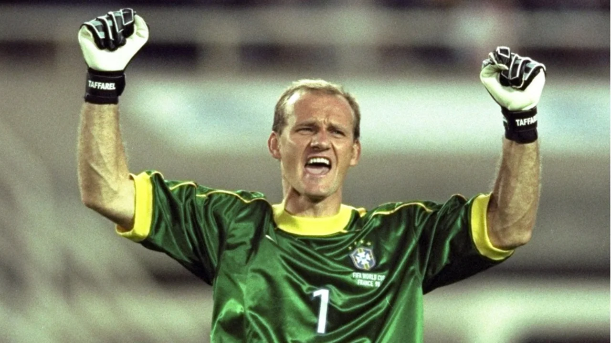
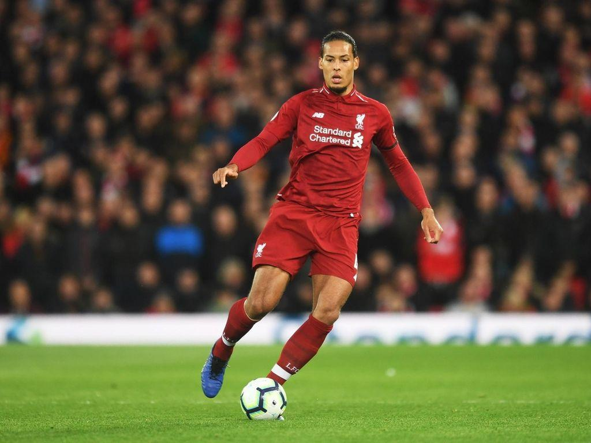
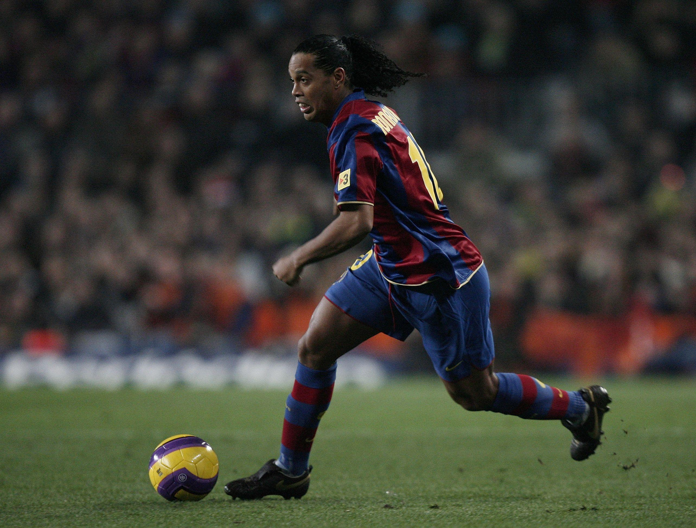

Goleiro

Responsável por evitar que a bola entre no gol.
Posições em campo

Responsável por evitar que a bola entre no gol.

Atua na defesa, evitando que os atacantes adversários cheguem ao gol.

Faz a ligação entre defesa e ataque, organizando as jogadas.
Jogador com a função principal de finalizar as jogadas e marcar gols.